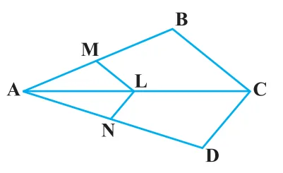

EXERCISE 6.2
- 1.In Fig. 6.17, (i) and (ii), \(DE \parallel BC\). Find EC in (i) and AD in (ii).

- 2.E and F are points on the sides PQ and PR respectively of a \(\triangle PQR\). For each of the following cases, state whether \(EF \parallel QR\) :
- (i)\(PE = 3.9\) cm, \(EQ = 3\) cm, \(PF = 3.6\) cm and \(FR = 2.4\) cm
- (ii)\(PE = 4\) cm, \(QE = 4.5\) cm, \(PF = 8\) cm and \(RF = 9\) cm
- (iii)\(PQ = 1.28\) cm, \(PR = 2.56\) cm, \(PE = 0.18\) cm and \(PF = 0.36\) cm

- 3.In Fig. 6.18, if \(LM \parallel CB\) and \(LN \parallel CD\), prove that \(\dfrac{AM}{AB} = \dfrac{AN}{AD}\).
- 4.In Fig. 6.19, \(DE \parallel AC\) and \(DF \parallel AE\). Prove that \(\dfrac{BF}{FE} = \dfrac{BE}{EC}\).

- 5.In Fig. 6.20, \(DE \parallel OQ\) and \(DF \parallel OR\). Show that \(EF \parallel QR\).

- 6.In Fig. 6.21, A, B and C are points on OP, OQ and OR respectively such that \(AB \parallel PQ\) and \(AC \parallel PR\). Show that \(BC \parallel QR\).

- 7.Using Theorem 6.1, prove that a line drawn through the mid-point of one side of a triangle parallel to another side bisects the third side. (Recall that you have proved it in Class IX).
- 8.Using Theorem 6.2, prove that the line joining the mid-points of any two sides of a triangle is parallel to the third side. (Recall that you have done it in Class IX).
- 9.ABCD is a trapezium in which \(AB \parallel DC\) and its diagonals intersect each other at the point O. Show that \(\dfrac{AO}{BO} = \dfrac{CO}{DO}\).
- 10.The diagonals of a quadrilateral ABCD intersect each other at the point O such that \(\dfrac{AO}{BO} = \dfrac{CO}{DO}\). Show that ABCD is a trapezium.